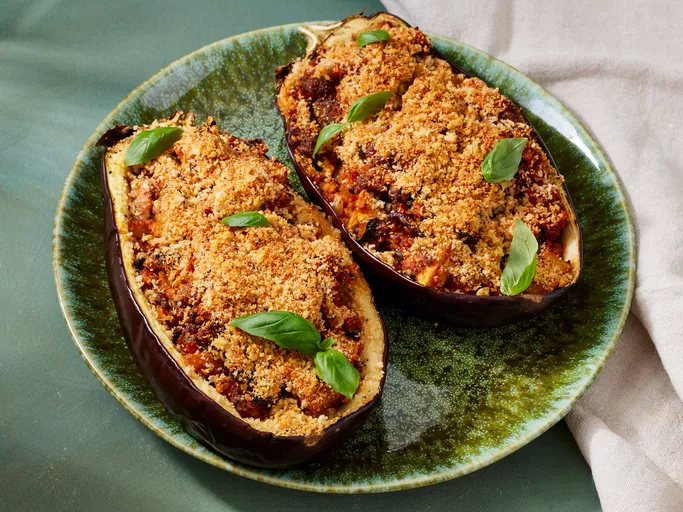

Stuffed Eggplant

Description
This delicious stuffed eggplant with a cheesy top
is a must-try recipe!
Great as a hearty main but you can buy the mini
eggplants and use them for a side dish or appetizer.
Ingredients
- 1 eggplant, halved lengthwise
- 3 tablespoons olive oil, divided
- ½ teaspoon salt
- ½ teaspoon ground black pepper
- ½ pound sweet italian sausage, casings removed
- 1 cup chopped onion
- 1 cup sliced fresh mushrooms
- 4 gloves garlic, minced
- 2 tablespoons chopped fresh basil
- 1 cup tomato-basil pasta sauce
- ¾ cup italian seasoned panko bread crumbs, divided
- ½ cup grated parmesan cheese, divided
Steps
- Scoop out the flesh, brush the shells with oil and season
- Chop the reserved eggplant flesh into bite-sized pieces
- Cook sausage, vegetables and garlic in the remaining oil
- Stir in the reserved eggplant, basil and sauce. Mix in some
of the panko and cheese
- Stuff the shells and sprinkle the remaining cheese and panko over the top
- Bake until the eggplant is tender